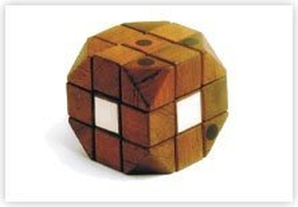
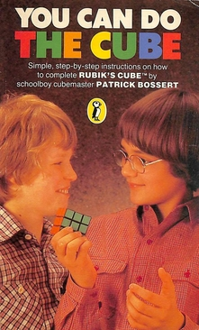
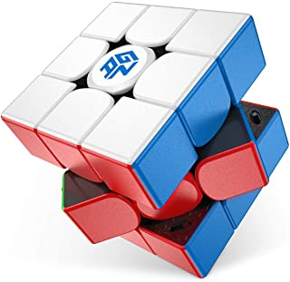

Petite histoire du Rubik's Cube
Le Rubik's Cube est un casse-tête inventé en 1974 par un sculpteur et professeur en architecture hongrois : Ernő Rubik.
Au départ, Ernő Rubik a inventé le Rubik's Cube dans un but pédagogique. Le cube contenait 26 éléments de forme cubique, et ses élèves devaient deviner comment les différents éléments du cube faisaient pour tourner librement en passant de face en face sans que les petits éléments se défassent.
Au départ, le cube n'était pas coloré, mais il eut l'idée, grâce à un ami, de rajouter des stickers de couleur sur chacun des éléments de façon à pouvoir retrouver l'état initial du cube après mélange.
Le problème est que ce cube a exactement 43 252 003 274 489 860 000 dispositions possibles (autrement dit, 4,3x1019). C'est pourquoi, la première fois, l'inventeur mettra plus d'un mois pour terminer son propre casse-tête. Le produit est alors mis en vente à partir de 1977 à Budapest. Le jeu gagne peu à peu en popularité, au départ en Hongrie, puis dans toute l'Europe. Le cube commence à être distribué mondialement en 1979 vers toutes les grandes villes du monde, et c'est alors que le cube prend le nom de "Rubik's cube". Ce n'est qu'en 1981 que la première méthode pour résoudre le cube apparaît. C'est un écolier de douze ans, Patrick Bossert, qui publie cette méthode sous le nom de "You can do the cube" (Vous pouvez faire le cube) qui s'est vendue à plus d' 1,5 million d'exemplaires à travers le monde.
Au fur et à mesure que les joueurs savaint résoudre le cube, une nouvelle discipline est apparue : le speedcubing. Cette discipline consiste tout simplement à finir un cube le plus rapidement possible. Pour cela, des compétitions sont organisées régulièrement. Le premier championnat du monde s'est déroulé en 1982, mais il n'a pas reçu beaucoup de participants. Les compétitions ont commencé à se développer lors de la fondation de la WCA (World Cube Association) qui gère toujours les compétitions de speedcubing.
Dans l'objectif de terminer un cube plus rapidement, certaines marques spécialisées dans le speedcubing ont été créées. Aujourd'hui, d'après les meilleurs compétiteurs, la meilleure marque de speedcubes est sans aucun doute GAN, même si les cubes de cette marque restent très chers (par exemple, le GAN 11 M Pro, le meilleur 3x3 existant à l'heure actuelle, se vend à 81€ environ, ce qui rerésente les prix les plus hauts pour des speedcubes 3x3).
Cependant, des inovations technologiques sont perceptibles régulièrement dans le domaine du speedcubing, ce qui montre que le Rubik's Cube est toujours d'actualité et le restera certainement pour encore un bon moment.